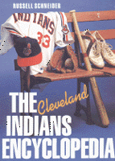

<body bgcolor="#FFFFFF" text="#000000" link="#0000FF" vlink="#CC0000" alink="#CC0000"><center><hr width="350" size="1" align="center" noshade>Everything you wanted to know about the Indians from 1869 to 1995<hr width="350" size="1" align="center" noshade><p><a href="https://cdcshoppingcart.uchicago.edu/Cart/ChicagoBook.aspx?ISBN=9781566394055&&PRESS=temple" target="_top">Buy this book!</a> | <a href="https://cdcshoppingcart.uchicago.edu/Cart/Cart.aspx?PRESS=temple" target="_top">View Cart</a> | <a href="https://cdcshoppingcart.uchicago.edu/Cart/Cart.aspx?PRESS=temple" target="_top">Check Out</a></p><p></p></center><!--none//--><h1>The Cleveland Indians Encyclopedia</h1>
<h3>Russell Schneider</h3>
<P>cloth 1-56639-405-8 $59.95, Feb 96, <FONT COLOR=#990033>Out of Print</FONT>
<BR> 584 pp
9x12
388&nbsp;tables 643&nbsp;halftones 16&nbsp;color&nbsp;illustrations
</P><h3 align="center"><P><font color="#996633">Philadelphia Book Clinic Certificate of Award,
1997</font></P>
</H3>
<BLOCKQUOTE><I>"[T]he most inclusive and best researched history of the franchise ever written....All baseball fans-especially fans of the Indians-will enjoy reading this book and using it for reference."</I>
<br>&#151<b>Bob Feller</b><I></I></BLOCKQUOTE>
<p>Propelled into the World Series for the first time since 1954, the Cleveland Indians have proved to the world they are no longer a run-of-the-mill team. These current contenders burst out from behind a long history beginning in 1869 when professional baseball first came to Cleveland. By 1901 Cleveland had become a charter member of the American League as the Cleveland Blues, then the Cleveland Bronchos in 1902, the Cleveland Naps in 1903, and finally the Cleveland Indians in 1914.
<p>From the team's earliest incarnation to their successful years between 1948 and 1954 to this season's stellar rise, this comprehensive volume traces the genesis of baseball in Cleveland, covering team lore and legend, the controversies, the triumphs, and the heartaches. It includes:
<ul>
<li><p>200 player profiles&#151from Napolean Lajoie of the early 1900s to 1960s star Rocky Colavito to today's headliners like Dave Winfield and Eddie Murray
<li><p>season-by-season descriptions of great moments and memories
<li><p>over 700 illustrations of players, game highlights, and memorabilia, including a 16-page color photo gallery
<li><p>extensive statistics, including box scores, team and individual records, and trades
<li><p>the World Series championships, the managerial strategies, the personalities, honors, and the milestones
<li><p>an immense treasure-trove of little known facts and surprising anecdotes
</ul>
<p>With special sections on the ballparks, the front office staff, the Hall of Famers, and the postseason, this book is a wealth of information for Indians fans, sports mavens, and trivia buffs alike.
<BR>&nbsp;<H2>About the Author(s)</H2>
<table><tr><td valign="top"><img src="/tempress/authors/1179_au.gif" height="90" width="75"></td><td width="100%" valign="middle"><p><B>Russell Schneider </B>was a sportswriter and columnist for <I>The Plain Dealer </I>in Cleveland for 32 years. He is the author of <I>The Making of a Manager: Frank Robinson </I>and <I>Lou Boudreau: Covering All the Bases </I>and is now a freelance writer based in Ohio.</P></td></tr></table>
<BR><H2>Subject Categories</H2>
<p><A HREF="/tempress/sports.html" TARGET="_top">Sports</a>
<BR><A HREF="/tempress/general.html" TARGET="_top">General Interest</a>
</p>
<BR><h2 class="inpageheading">In the series</H2>
<P><I><a href="http://www.temple.edu/tempress/encyclo.html" onMouseOver="window.status='Click for other books in this series!'; return true;" onMouseOut="window.status=''; return true;" target="_top">Baseball Encyclopedias of North America</a></i>, edited by Rich Westcott.
</p><p>The purpose of <i>Baseball Encyclopedias of North America</I>, edited by Rich Westcott, is to examine each of the clubs in big league baseball in an encyclopedic format. That is, to provide baseball fans a place to go to find information on a particular team organized in such a fashion that is available nowhere else. The series editor aims to concentrate on the 16 original teams of both leagues and publish each book as he is able to find the right person to do it. The books will all be unique because of their emphasis on three major components: 1) short, straight forward prose accounts of all aspects of the team including seasons, players, stadiums and front office people, 2) listings and statistics of all players of the team, and 3) heavy illustrations. These books can be read cover to cover or used as reference materials.</p>
<p align="center"><a href="https://cdcshoppingcart.uchicago.edu/Cart/ChicagoBook.aspx?ISBN=9781566394055&&PRESS=temple" target="_top">Buy this book!</a> | <a href="https://cdcshoppingcart.uchicago.edu/Cart/Cart.aspx?PRESS=temple" target="_top">View Cart</a> | <a href="https://cdcshoppingcart.uchicago.edu/Cart/Cart.aspx?PRESS=temple" target="_top">Check Out</a></p><p><font face="Arial" size="1"><a href="copyright.html" onMouseOver="window.status='Web Copyright Policy';return true;" onMouseOut="window.status=''" title="Web Copyright Policy">&copy;</a> 2015 <a href="http://www.temple.edu" target="new" onMouseOver="window.status='Link to Temple University home page';return true;" onMouseOut="window.status=''" title="Link to Temple University home page">Temple University</a>. All Rights Reserved. http://www.temple.edu/tempress/titles/1179_reg.html</font></p>